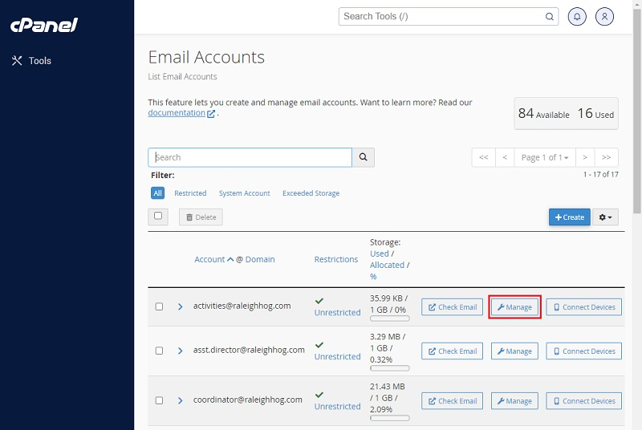

Change an Account Password
Occasionally, you may have an officer leaving a postion that has forgotten their email account password and it has to be reset so the new officer can access the email. The following steps will walk you through changing an account password.
- Login to the shared account for cPanel. As this is shared do NOT change the Username or Password. see image below
- After logging in, click Email Accounts in the Email section. see image below
- The page opens showing all created email accounts. Click the Manage button for the account whose password is to be reset.
The Activies Officer account (activities@raleighhog.com) is shown as an example for this tutorial. see image below 
- In the page that opens, enter in the New Password.
Optionally, you can click on the Generate button to have the system gen a new password for you.
When clicked, the eye with the line through it will let you see the password that you are entering. see image below
- After entering the new password, scroll down and click the Update Email Settings button to save it. see image below
- Inform the user of their new password. (Also let them know they should change their password)